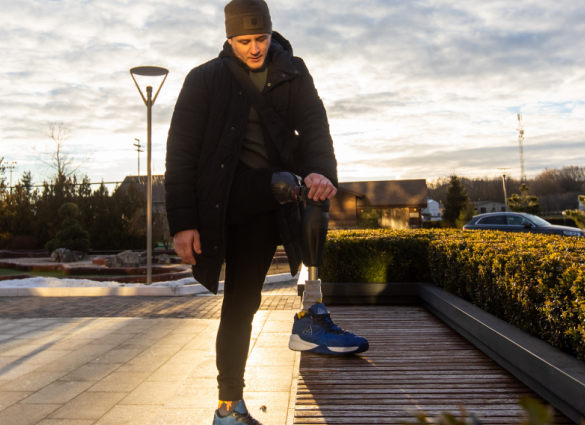

Ми – фонд підтримки постраждалих від війни
Наша мета – психологічна та гуманітарна допомога українцям
Кожен, хто звернеться, отримає допомогу, яка у наших силах

Кожен, хто звернеться, отримає допомогу, яка у наших силах
Ми допомагаємо людям, які постраждали знайти правильне лікування. У нашому фонді є чотири напрями: фізичної та реабілітаційної медицини, терапевтичне, неврологічне та хірургічне. Ми маємо заклади-партнери, де швидко та якісно можуть надати допомогу.
Діти – найвразливіша частина суспільства, і їм особливо потрібна підтримка дорослих. Тому наш фонд збирає речі для дітей, проводить літні й зимові табори, майстер-класи та за потреби – дитячих прсихотерапевтів.